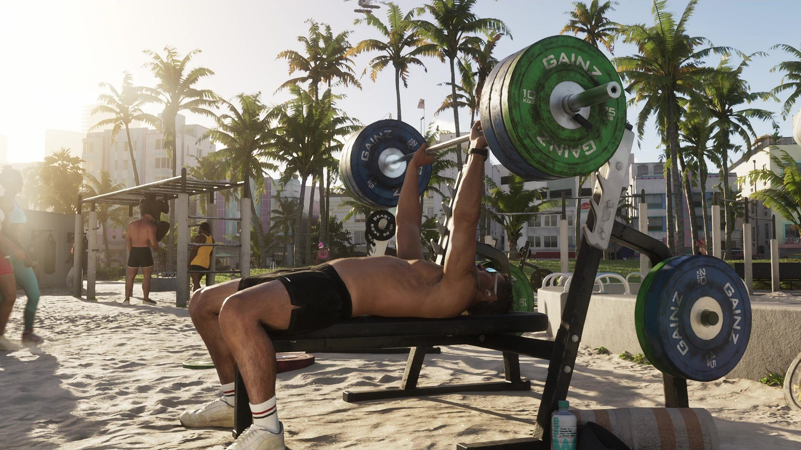
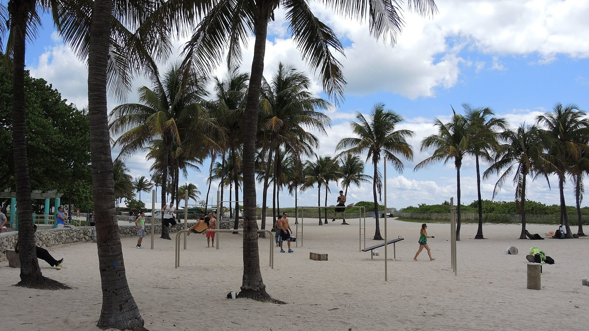

Спортзал на пляже и Lummus Park в Майами-Бич
Опубликовано:
Тренажёры прямо на песке, пальмы, люди в купальниках вокруг — так выглядит пляж Lummus Park в Майами-Бич. Rockstar показала его как есть.


- Во втором трейлере парень жмёт тяжёлую штангу на скамье прямо на песке, вокруг пальмы и отдыхающие.
- В Майами-Бич уличные спортплощадки стоят на пляже Lummus Park вдоль Ocean Drive.
- У 5-й улицы есть открытый зал, где культуристы тренируются на глазах у туристов.
- Традиция «качалки на пляже» пришла из Калифорнии — с Muscle Beach в Санта-Монике 1930-х.
Что в игре
Кадр из второго трейлера: солнечный пляж, пальмы, белый песок. На скамье лежит загорелый парень и жмёт штангу с огромными зелёными блинами. Рядом стойки и тренажёры, вокруг ходят люди в купальниках — кто-то тренируется, кто-то просто смотрит. За пальмами видны дома у пляжа.
Что в реальности
Lummus Park — парк и пляж вдоль Ocean Drive в Саут-Бич, между 5-й и 15-й улицами, напротив отелей ар-деко. Назван в честь братьев Ламмус; Джон Ньютон Ламмус в 1915 году стал первым мэром Майами-Бич. На песке среди пальм стоят уличные спортплощадки: турники, брусья, тренажёры. У 5-й улицы — открытый зал, где культуристы тренируются при зрителях, переворачивают огромные шины и позируют туристам.
Мода качаться на пляже на глазах у публики родилась не во Флориде, а в Калифорнии. В 1930-х в Санта-Монике появилась площадка Muscle Beach — там тренировались гимнасты и культуристы, а посмотреть на них собирались толпы. Название стало нарицательным: «muscle beach» теперь называют любую качалку на пляже, в том числе в Майами.
Совпадает и отличается
| Майами-Бич | GTA 6 | |
|---|---|---|
| Тренажёры прямо на песке | Да | 🟢 Да |
| Пальмы вокруг | Да | 🟢 Да |
| Тренировки при зрителях | Да | 🟢 Да |
| Тяжёлая штанга на скамье | Открытый зал у 5-й улицы | 🟢 Да |
| Название пляжа | Lummus Park | Узнаем в игре |
Источники: Rockstar Games (трейлер 2 GTA 6); City of Miami Beach — Lummus Park; Greater Miami Convention & Visitors Bureau.
Реальные фото: Фото: Pietro, CC BY-SA 3.0 · Wikimedia Commons. Кадры игры: Rockstar Games.
Каждый день — одно сравнение: кадр игры рядом с реальным фото. Подписывайтесь:
YouTubeInstagramTikTok
 vs
vs
 vs
vs
 vs
vs